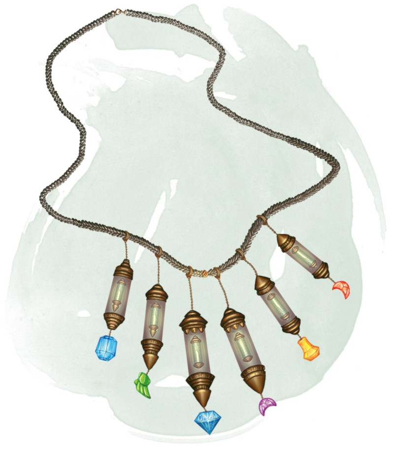

Necklace of Prayer Beads
Wondrous item, rare (requires attunement by a cleric, druid, or paladin)
This necklace has 1d4 + 2 magic beads made from aquamarine, black pearl, or topaz. It also has many nonmagical beads made from stones such as amber, bloodstone, citrine, coral, jade, pearl, or quartz. If a magic bead is removed from the necklace, that bead loses its magic.
Six types of magic beads exist. The DM decides the type of each bead on the necklace or determines it randomly. A necklace can have more than one bead of the same type. To use one, you must be wearing the necklace. Each bead contains a spell that you can cast from it as a bonus action (using your spell save DC if a save is necessary). Once a magic bead's spell is cast, that bead can't be used again until the next dawn.
Six types of magic beads exist. The DM decides the type of each bead on the necklace or determines it randomly. A necklace can have more than one bead of the same type. To use one, you must be wearing the necklace. Each bead contains a spell that you can cast from it as a bonus action (using your spell save DC if a save is necessary). Once a magic bead's spell is cast, that bead can't be used again until the next dawn.
| d20 | Bead of ... | Spell |
|---|---|---|
| 1-6 | Blessing | Bless |
| 7-12 | Curing | Cure wounds (2nd level) or lesser restoration |
| 13-16 | Favor | Greater restoration |
| 17-18 | Smiting | Branding smite |
| 19 | Summons | Planar ally |
| 20 | Wind walking | Wind walk |
Dungeon Master´s Guide (SRD)
